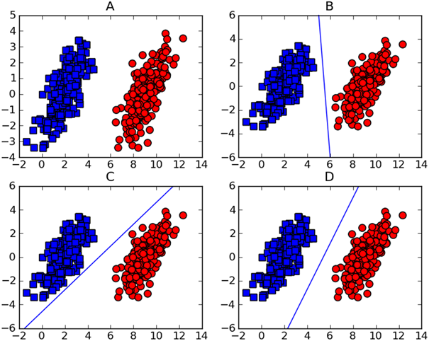
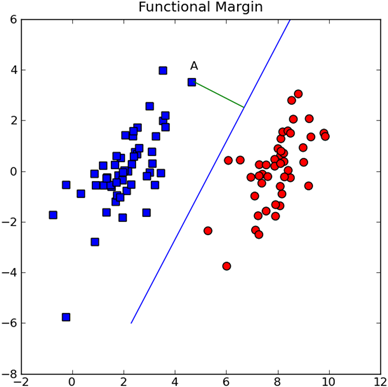
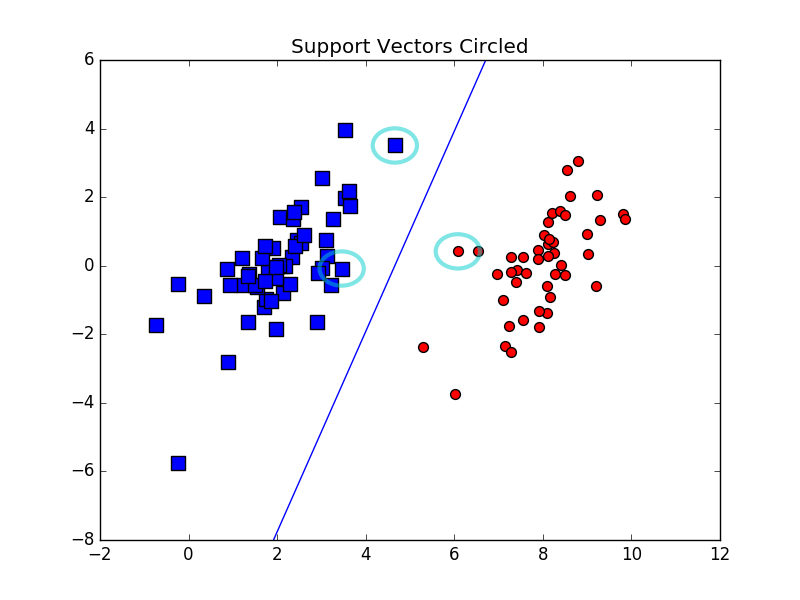
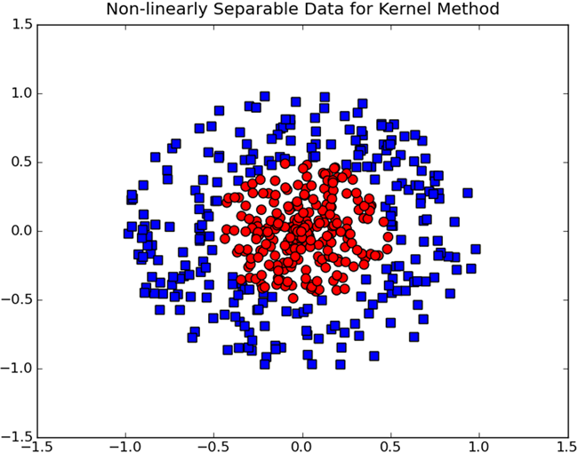
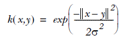

机器学习实战（6）--支持向量机SVM
2016-07-03
支持向量机
SVM是最好的现成分类器，“现成”指的是分类器不加修改可以直接使用。
本章将使用最流行的一种实现，即序列最小优化（Sequence Minimum Optimization，SMO）算法。
6.1基于最大间隔分隔数据

- 将数据集分割开来的直线称为分隔超平面（separating hyperplane）。
- 我们希望找到离分割超平面最近的点，确保它们离分隔面的距离尽可能远。
- 支持向量（support vector）就是离分割超平面最近的哪些点。
6.2寻找最大间隔

分割超平面的形式可以写成这样：
math
W^{T}X+b
要描述A到分割超平面的距离，就必须给出点到分隔面的法线长度：
math
|W^{T}A+b|/||W||
6.2.1分类器求解的优化问题
这里的类别标签用-1和1，而不是0和1，以便用统一的公式来表示间隔或者数据点到分隔超平面的距离而不用担心数据到底是属于-1还是1类。
现在的目标就是找出分类器定义中的W和b。为此，我们必须找到具有最小间隔的数据点，也就是支持向量。一旦找到具有最小间隔的数据点，就需要对该间隔最大化：
直接求解这个问题很麻烦，所以用拉格朗日乘子法，通过引入拉格朗日乘子可以基于约束条件来表达原问题（尖括号表示两个向量的内积）：
引入松弛变量后约束条件变为：

这里用常数C来控制“最大化间隔”和“保证大部分点的函数间隔小于1.0”这两个目标权重。
6.3SMO高效优化算法
要对上一节的两个式子进行优化，一个是目标函数，一个是约束条件。
6.3.1Platt的SMO算法
SMO（Sequence Minimal Optimization）。是将大优化问题分解为多个小优化问题来求解。这些小优化问题往往很容易求解，并且对他们进行顺序求解的结果与将它们作为整体来求解的结果是一致的。
SMO算法的原理是：每次循环之中选择两个合适的alpha进行优化。一旦找到，就同时减少其中一个，增大另外一个。alpha满足的条件有：①两个alpha必须在边界之外；②alpha还没有进行区间优化处理或者不在边界上。
# -*- coding: utf-8 -*-
#SMO算法中的辅助函数
def loadDataSet(fileName):
dataMat=[]
labelMat=[]
fr=open(fileName)
for line in fr.readlines():
lineArr=line.strip().split('\t')
dataMat.append([float(lineArr[0]),float(lineArr[1])])
labelMat.append(float(lineArr[2]))
return dataMat,labelMat
def selectJrand(i,m):
j=i
while j==i:
j=int(random.uniform(0,m))
return j
#其中i是alpha的下标，m是alpha的个数
def clipAlpha(aj,H,L):
if aj>H:
aj=H
if aj<L:
aj=L
return aj
#用于调整大于H或者小于L的alpha值
SMO的伪代码：
创建一个alpha向量，初始化为0向量
当迭代次数小于最大迭代次数时（外循环）
对数据集的每个数据向量（内循环）：
如果该数据向量可以被优化：
随机选择另一个数据向量
同时优化这两个
如果两个都不能被优化，退出内循环
如果所有向量都未被优化，增加迭代数目，进入下一次循环
简化版SMO代码如下：
# -*- coding: utf-8 -*-
#辅助函数
def loadDataSet(fileName):
dataMat=[]
labelMat=[]
fr=open(fileName)
for line in fr.readlines():
lineArr=line.strip().split('\t')
dataMat.append([float(lineArr[0]),float(lineArr[1])])
labelMat.append(float(lineArr[2]))
return dataMat,labelMat
def selectJrand(i,m):
j=i
while j==i:
j=int(random.uniform(0,m))
return j
def clipAlpha(aj,H,L):
if aj>H:
aj=H
if aj<L:
aj=L
return aj
dataArr,labelArr=loadDataSet('D:/BaiduYunDownload/MLinaction/Ch06/testSet.txt')
from numpy import *
def smoSimple(dataMatIn,classLabels,C,toler,maxIter):
# dataMatIn: 数据集
# classLabels：类别标签
# toler：容错率
# maxIter：最大循环次数
dataMatrix=mat(dataMatIn);labelMat=mat(classLabels).transpose()
b=0;m,n=dataMatrix.shape
alphas=mat(zeros((m,1)))
iter=0
while (iter<maxIter):
alphaPairsChanged=0
for i in range(m):
fXi=float(multiply(alphas,labelMat).T*(dataMatrix*dataMatrix[i,:].T))+b
Ei=fXi-float(labelMat[i])
#如果alpha可以优化进入优化过程
if (labelMat[i]*Ei< -toler and alphas[i]<C) or (labelMat[i]*Ei>toler and alphas[i]>0):
j=selectJrand(i,m)#随机选择第二个alpha
fXj=float(multiply(alphas,labelMat).T*(dataMatrix*dataMatrix[j,:].T))+b
Ej=fXj-float(labelMat[j])
alphaIold=alphas[i].copy()
alphaJold=alphas[j].copy()
if labelMat[i]!=labelMat[j]:
#保证alpha在0到C之间
L=max(0,alphas[i]-alphas[j])
H=min(C,C+alphas[j]-alphas[i])
else:
L=max(0,alphas[j]+alphas[i]-C)
H=min(C,alphas[j]+alphas[i])
if L==H:
print "L==H";continue
eta=2.0*dataMatrix[i,:]*dataMatrix[j,:].T-\
dataMatrix[i,:]*dataMatrix[i,:].T-\
dataMatrix[j,:]*dataMatrix[j,:].T
if eta>=0: print "eta>=0"; continue
alphas[j]-=labelMat[j]*(Ei-Ej)/eta
alphas[j]=clipAlpha(alphas[j],H,L)
if abs(alphas[j]-alphaJold)<0.000001:
print "j not moving enough";continue
alphas[i]+=labelMat[j]*labelMat[i]*(alphaJold-alphas[j])
b1=b-Ei-labelMat[i]*(alphas[i]-alphaIold)*\
dataMatrix[i,:]*dataMatrix[i,:].T-\
labelMat[j]*(alphas[j]-alphaJold)*\
dataMatrix[i,:]*dataMatrix[j,:].T
b2=b-Ej-labelMat[i]*(alphas[i]-alphaIold)*\
dataMatrix[i,:]*dataMatrix[j,:].T-\
labelMat[j]*(alphas[j]-alphaJold)*\
dataMatrix[j,:]*dataMatrix[j,:].T
if alphas[i]>0 and alphas[i]<C:
b=b1
elif alphas[j]>0 and alphas[j]<C:
b=b2
else:
b=(b1+b2)/2.0
alphaPairsChanged+=1
print "iter: %d i: %d,pairs changed %d"%(iter,i,alphaPairsChanged)
if alphaPairsChanged==0:
iter+=1
else:
iter=0
print "iteration number : %d"%iter
return b,alphas
b,alphas=smoSimple(dataArr,labelArr,0.6,0.001,40)

程序在运行上比较慢，但只是为了了解下思路，毕竟是要成为调包侠的男人。
6.5在复杂数据上应用核函数

上图的数据集明显存在模式，但是很难用一条直线分割，这里就需要用到核函数（kernel）了。
6.5.1利用核函数将数据集映射到高维空间
核函数可以从某个很难处理的形式转换为另一个比较容易处理的形式。经过空间转换后我们可以在高维空间解决线性问题，相当于在低维空间解决非线性问题。
SVM优化中一个很好的地方就是，所有的运算都可以写成内积的形式，我们可以把内积运算写成核函数，而不必做简化处理。将内积替换成核函数的方式成为核技巧（kernel trick），或者核“变电”（kernel substation）。
### 6.5.2径向核函数
径向核函数直接以向量作为自变量，能够基于向量的距离运算输出一个标量。这个距离可以是从<0,0>向量或者其他向量开始计算的距离。高斯版本的形式：

上述高斯核函数将数据从其特征空间映射到一个无穷维的空间。
后面的核函数的应用就不怎么看得懂了，Kernel functions。